|
PART II:
The Space Scene |
|
Step 17: Lens Flare |
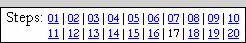 |
Let's add a quick artistic element to our image by inserting a nice light
reflection on our sun before we wrap up this long and very educational part of
this project.
- Open your Space16
file in Photopea
- Insert a new layer at the top of the layer stack and name it Flare
- Fill the Flare layer with black
- Change the blending mode of the Flare layer to Linear Dodge
- Turn on the visibility of your Sun layer group
- Click Filter and point at Render and click Lens Flare
(the Lens Flare filter simulates the spots in a picture that results from light reflecting off a camera's lens)
to open the Lens Flare window...
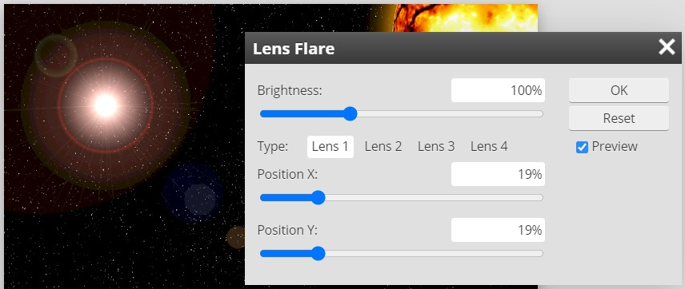
Note that you should also see a big white light on your scene - I have my
star field layer visible in the above image so you can see the lens flare
more clearly
- Click through each of the four Type options (listed as Lens 1, 2,
3, and 4 in the above image) and see what type of flare each selection
creates
The four Lens Types represent different kinds of lenses you can put on real cameras.
- Click the Lens 1 option (just like the image above)
- Set the Brightness percentage to
125% - this will give us a lens flare that is bright enough so that we
can see where it is and how it impacts our overall scene (keep in mind that
we will be able to adjust its brightness later)
Your flare is probably sitting in the upper left region of your scene (it
it's not, don't worry as we are about to move it), but we need it to stretch
away from our sun, which should be sitting in one of the corners of our image.
- Move the Lens Flare window so that you can see your sun
- Click and drag the sliders for Position X and Position Y...
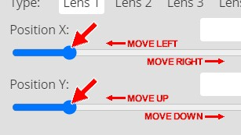
Until the bright dot of your lens flare sits on your sun, which for my image
is the location shown below...
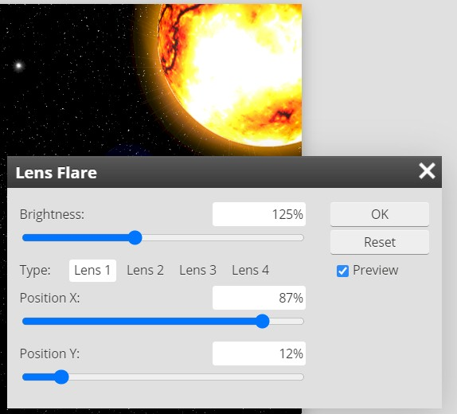
Note that these numbers work for me - your numbers may be different
Before we click OK and commit to the creation of our lens flare, we need to
make sure that all of it is visible on the screen. We need to confirm this
because if any part out lens flare is cut off, those missing pieces will be
obvious when we try to resize the flare. Take a close look at the corner of your
space scene that is opposite your sun, you should something like the image
below...
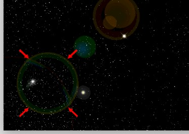
See that circle pointed at with the tiny red arrows? That circle is the part
of the lens flare that is farthest away from the bright light. You need to make
sure that you can see all of the circle just like the image above. If any part of
the circle is cut off like the image
below...
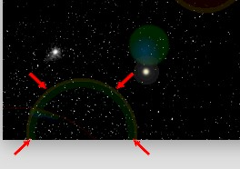
You will have problems in the next few directions because we are going to
resize our flare and having a circle that is cut off is going to look really odd
and not very realistic.
- Look over your lens flare - if part of it is cut off like the image above,
use the Position X and Position Y sliders to move your flare so that no part
of any of your circles are cut off
- When you are happy with your lens flare, click OK
You should now have something similar to the image below...
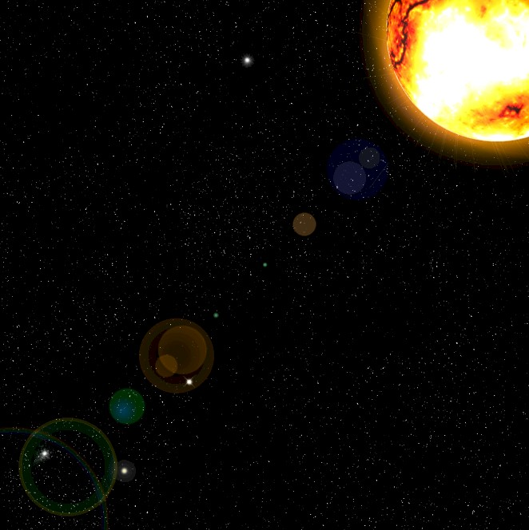
Our next task will be to shorten the flare so that it doesn't stretch across
the entire image. I could go into an entire explanation of how cameras work
and a shorter lens flare more accurately represents reality, but at this
point we are more interested in how the Photopea tools work, so let's skip
the long explanation and just talk about how to shorten the flare.
- With the Flare layer selected, click Edit then click Free
Transform
- Press and hold the Shift key (this will ensure that both the
height and width of your flare changes at the same time) and then click and drag the resize handle opposite your sun
until your flare stretches about two-thirds of the way across your image...
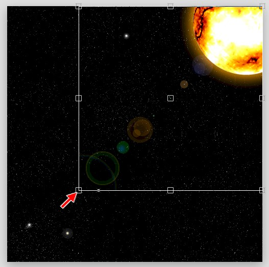
- If you want your flare to sit at a different angle (in other words, not
go straight from one corner to the next), rotate the flare
until it sits at an angle you like - if you are happy with the current angle
of your flare, go to the next direction
- When you have your flare in a position you like, click the Confirm check
at the top of the Photopea window...
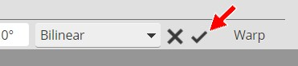
- Decide if you are happy with how bright your flare is in comparison to the
rest of your scene (the flare should be an additional element in the image
and NOT the image's focal point), if you think it is too bright, simply lower the
Opacity of
the Flare layer until your flare is a brightness you like
- Lock the Flare layer...
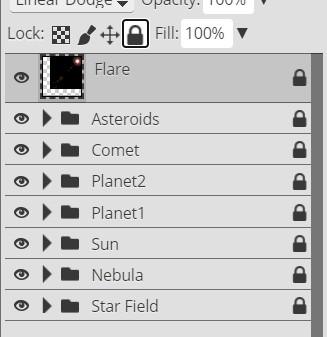
With all of your layer groups and layers turned on you should now have a space
scene similar to the one below...
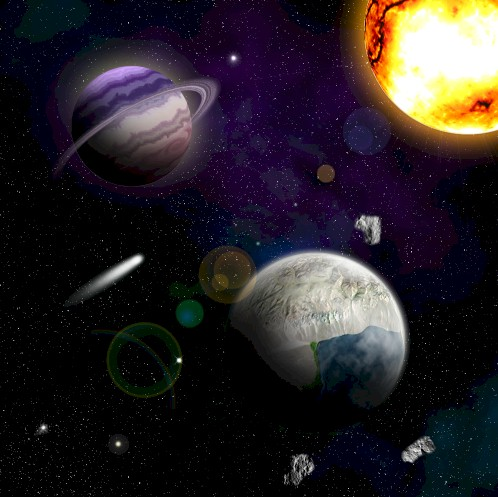
For the image you see above, I increased the size of the flare, rotated it
up just a bit so that most of the flare did not cover the planet, and lowered it's
Opacity to 50%.
-
Click File and then click Save as PSD
-
Name the file Space17
This marks the end of Part II: The Space Scene.
All we have left to do is get a nice spaceship with you as the pilot and get you
flying through space, which is
Part III: The
Animation!
01 |
02 |
03 |
04 |
05 |
06 |
07 |
08 |
09 |
10 |
11 |
12 |
13 |
14 |
15 |
16 | 17 |
18 |
19 |
20